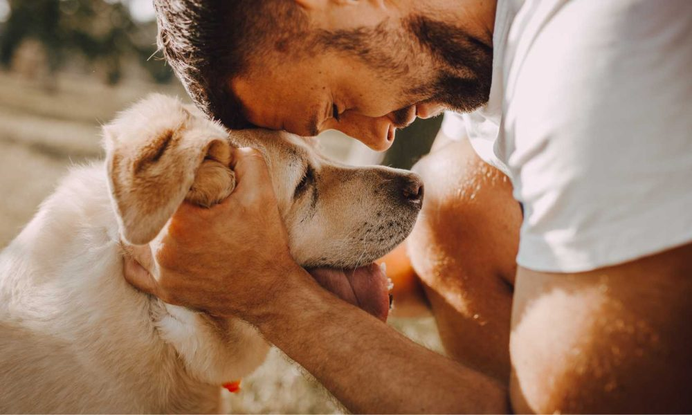

INTRODUCCION
A lo largo de la historia la relación entre los perros y los humanos ha pasado de ser una interacción de trabajo a desempeñar estos últimos roles de compañía e incluso pertenecer a la familia, De acuerdo a Aguilar (2019) esto ha implicado un gran cambio en la percepción que se tiene acerca de la relación con los perros, no siendo vistos como mascotas sino como un componente de la familia, de una familia denominada según esta autora como multi-especie donde desempeñan roles que van más allá del trabajo y la compañía, La comprensión del concepto de familia no se limita a algo estático e inamovible, Se tiene como un concepto variable que cambia de acuerdo a la sociedad, basándose en conceptos modernos que reconocen la diversidad en las relaciones familiares(p-169-172).de este modo, las mascotas son valoradas no solo por su compañía, sino también por las diversas maneras en que enriquecen la vida familiar.
Para los propietarios de perros el bienestar emocional y problemas de conducta son una preocupación severa y común . De estos últimos se tiene que “el 52.5% de estos problemas pasan desapercibidos por los dueños”(Vega Ruiz, C,M 2004 p-79). Nuestro proyecto aspira a incorporar de manera exitosa la industria 4.0 en la vida de los perros, a la par que satisface la incomprensión de los propietarios frente a los diversos comportamientos y emociones de sus mascotas.
Nuestro proyecto consistirá en un collar para perros electrónico no invasivo y seguro para la mascota constituido de materiales resistentes a la humedad, mordidas y al entorno que rodea a los perros el collar a su vez está intercomunicado a través de herramientas API para recopilar la diversa información de los sensores integrados en el collar relacionada al comportamiento del perro, extrayendo así patrones de movimiento, detección de sonidos o cambios en sus pulsaciones que puedan ser señal de determinados problemas de conducta, esto se logra a través de un modelo neuronal que tomará como datos la información recopilada por los sensores a su vez que el movimiento del animal a través del mapa del hogar que se creara usando algoritmos SLAM, finalmente la detección de emociones será transmitida a una app intuitiva desarrollada con android studio que asegurara la permanencia de los datos usando SQLite y aplicación en la cual el usuario podrá consultar y observar informes relacionados al comportamiento del animal.
